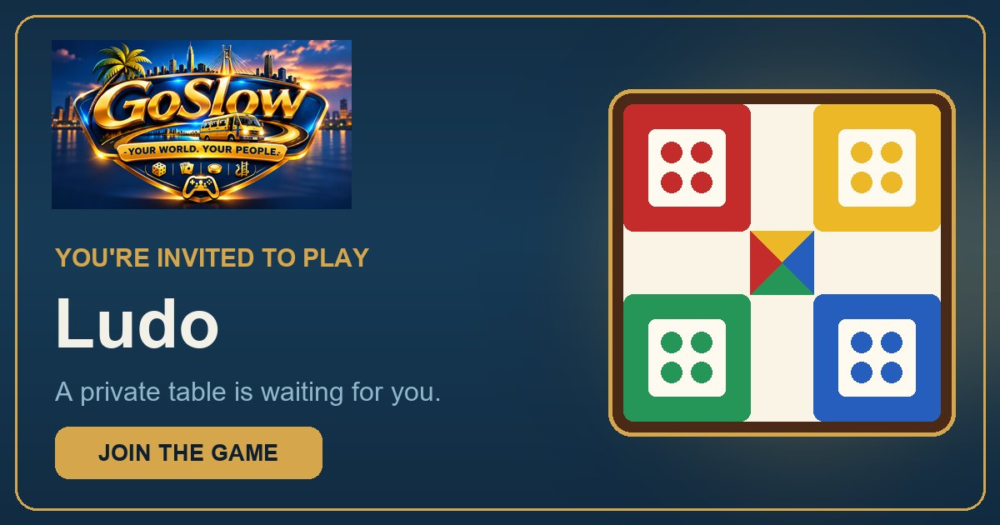

PRIVATE BETA INVITATION
Welcome to GoSlow
Your world. Your people. Games, conversation and good company, made in Lagos.
Download GoSlow for AndroidPrivate Beta 0.1.0 · Build 2026-11-24-60ee9dd1 · Android only · about 230 MB, so Wi-Fi is best.
Getting started
1
InstallSign in with the Google account that was invited, then tap Download. Google may say the file is too large to scan, so choose Download anyway. Open the downloaded file and tap Install. If Android asks, allow this app to install it. Keep Play Protect on.
2
Open GoSlowTap Enter GoSlow. No email or password is needed.
3
Make it yoursConfirm you are 18 or over, choose your name and pick a character head. Real-face photos are not working yet, so please use one of the animal heads for now.
4
Arrive in your LoungeAllow the microphone when asked so friends can hear you. You can mute at any time.
5
Play togetherTap PLAY, choose a game, then Play With Friends. Create a table and share its code, or choose Join a Game and enter a code.
Games
Ludo · Whot · Snakes & Ladders · Draughts
Tell us what you think
Please send your thoughts straight to the person who invited you.
About this beta
This is an early private test for invited adults (18+). Please keep this link to yourself. GoSlow may be unavailable at times, and test progress may be reset. No real payments are taken. Your name, character, game activity and any feedback are stored for testing. Live voice goes through our voice provider while you are connected and is not recorded by GoSlow. Your guest account stays on this phone, so uninstalling the app can lose it.